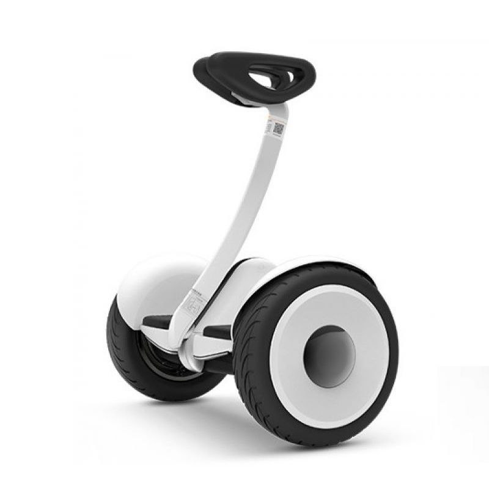
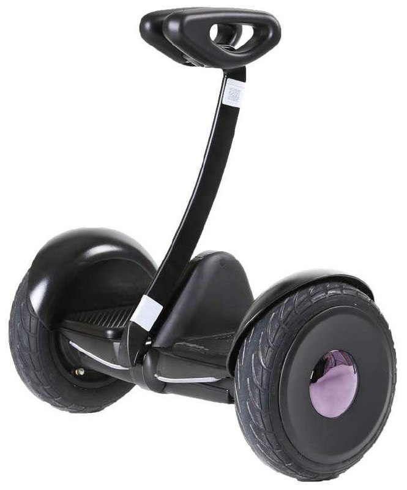
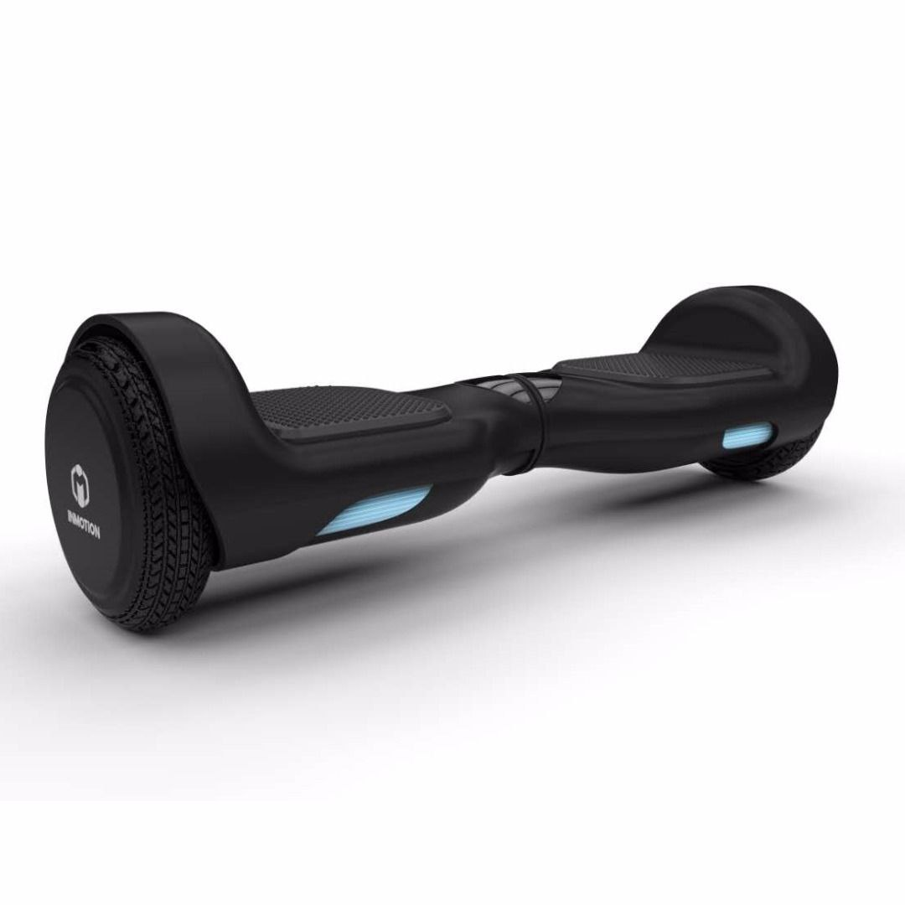
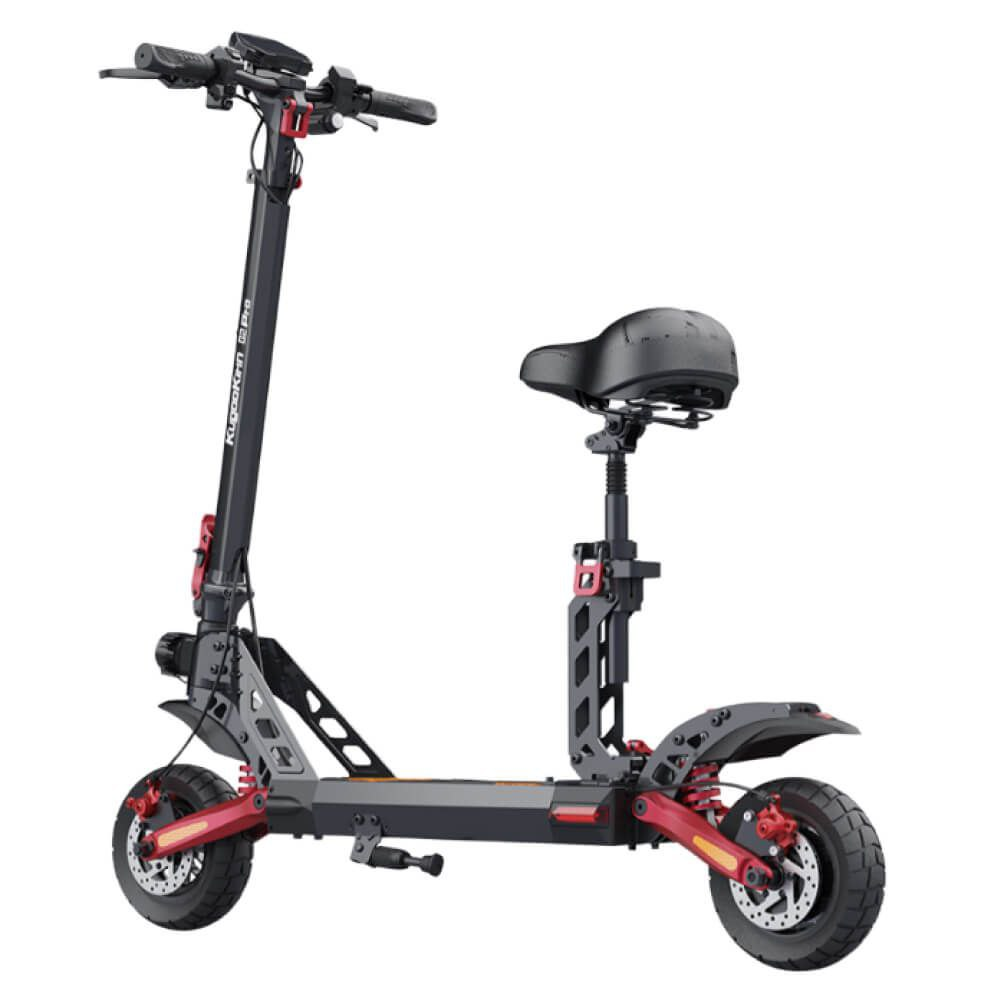
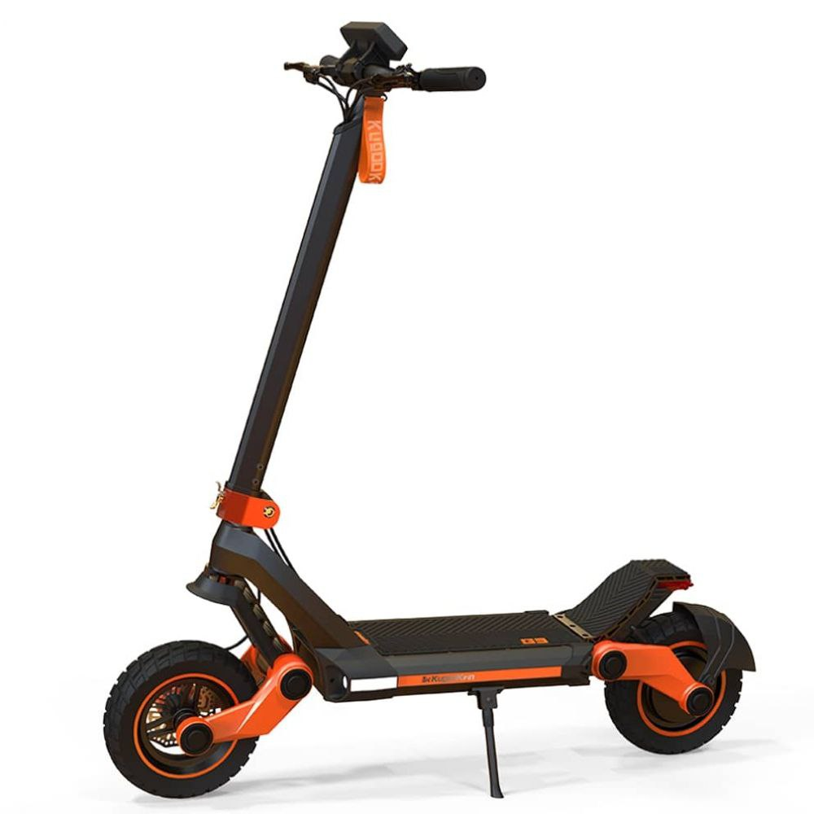
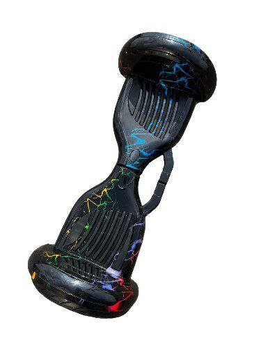
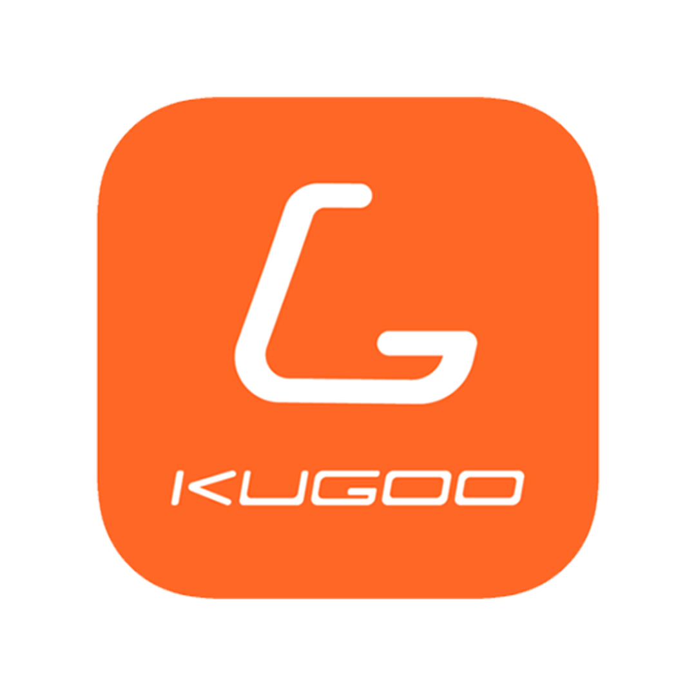

Особенности электротранспорта
Сигвеи
Сегвей (англ. Segway) — электрическое самобалансирующееся транспортное средство с двумя колёсами, расположенными по обе стороны от водителя.
Электросамокаты
Электросамокат — это самокат с электродвигателем, средство индивидуальной мобильности. Электросамокаты могут использоваться для прогулок по городу и езды на портативном транспортном средстве.
- Достоинства
Гироскутеры
Гироску́тер (двухколёсный скутер, самобалансируемый скутер англ. GyroScooter) — уличное электрическое транспортное средство (средство индивидуальной мобильности), выполненное в форме двух соединённых поперечных площадок для ступней, подвижных относительно друг друга, с колёсами по бокам. Использует электродвигатели, питаемые от электроаккумулятора, и ряд гироскопических датчиков для самобалансировки и поддержания горизонтального положения площадки для ног.
Каталлог товаров
Сигвей Белый Xiaomi Ninebot Mini White Bluetooth
24400р
Двухколесный мини сегвей Xiaomi Ninebot Mini
Сигвей Xiaomi NineBot Mini Original 10,5" black
64700р
Диаметр колес – 10.5" дюймов. Мощность составляет 800 Ватт. По прямой ровной дороге транспортное средство разгоняется до внушительных 16 км/ч. Модель преодолевает углы подъема до 15 градусов
ГИРОСКУТЕР INMOTION H1
57000р
InMotion H1 - электросамокат для взрослых, два колеса, электрический, электрический, нагрузка до 120 кг, разгоняется до 15 км/ч. Доставка inmotion h1 по городу Санкт-Петербург и другим городам России.
Электросамокат Kugoo KGK G2 Pro Black
47000р
Электросамокат Kugoo KGK G2 Pro Black имеет двойную тормозную систему, благодаря чему обеспечивается быстрая остановка.
Kugoo Электросамокат Kugoo M5 Pro 1000W/48V 21Ah

75000р
Электросамокат Kugoo M5 Pro 1000W/48V 21Ah — это мощный транспорт для поездок по городу. Модель оснащена двумя амортизаторами, которые поглощают вибрации при движении по неровным дорогам.
Электросамокат Kugoo Kirin G3
72000р
Электросамокат Kugoo Kirin G3 - является в своем роде внедорожником. Благодаря глубоким рессорам водитель без усилий проедет почти по любой пересеченной поверхности - парковые зоны, ландшафтные поверхности. Данная модель пользуется спросом у ценителей быстрой и спортивной езды.
Гироскутер Kugoo Kirin 10.5 , разноцветные молнии.
20000р
Скорость этого гироскутера достигает 15 км/ч, что позволяет вам быстро передвигаться по городским улицам или паркам.
Гироскутер для детей KUGOO Smart Jilong, 1000 Вт, космос

17000р
Электрический скутер, предлагающий инновационный и комфортный способ передвижения.
Наши консультанты
Дмитрий Владимрович Картьенов
- лучший консультант 2023
Кристина Эльдаровна Новикова
- призёр международного комплекса
Эдгар Харуфович Дзержинков
- обладатель самого большого окличества преданных покупателей
Бренды нашей компании
Xiomi
Inmotion
Kugoo
Стоит ли покупать самокат: аргументы «за»
- Основные преимущества электротранспорта:
Отзывы о нас

Ангелина
Спасибо огромное за Ваш электросамокат, катаюсь уже 2 года, никаких недостатков, только удобство и комфорт!
Павел
Всё супер, даже несмотря на то, что овзник небольшой брак, но поддержка очень быстро устранила его! Спасибо за вашу отзывчивость
Андрей
Отличный сигвей, каждый день катаюсь на работу, даже уговорил несколько коллег купить похожие. Спасибо огромное!
Полина
Моему счастью нет предела! Это просто чудо техники! Катаюсь каждые выходные на природу и лесной дороге и никаких вопросов к качеству товара так и не возникло!